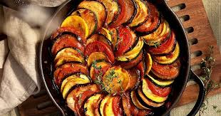

Ratatouille
O ratatouille é um ensopado de vegetais francês, feito com berinjela, abobrinha, pimentão e tomate.
Ver ReceitaBem-vindo(a) ao Chef's Delicias ! Aqui, a culinária descomplicada encontra o sabor autêntico. Descubra receitas fáceis, rápidas e deliciosas para o seu dia a dia, desde o café da manhã até o jantar. Transforme ingredientes simples em pratos incríveis e inspire-se a cozinhar com amor e praticidade.

O ratatouille é um ensopado de vegetais francês, feito com berinjela, abobrinha, pimentão e tomate.
Ver Receita
Camadas de massa, molho rico e queijo derretido. Uma delícia!
Ver Receita
coxinha é o salgado perfeito: uma casca dourada e crocante que quebra ao morder, revelando um recheio suculento de frango temperado e cremoso.
Ver Receita